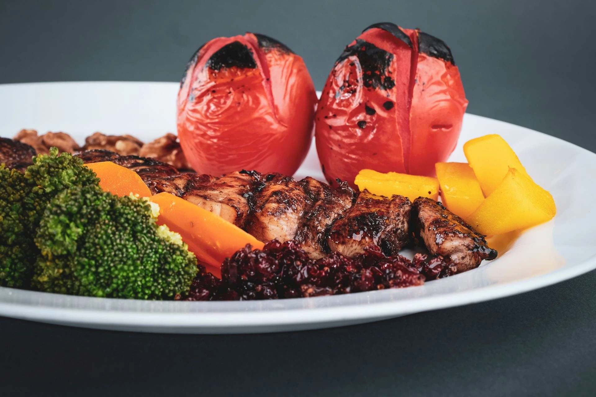

Bring Fine Dining to Your Home
The landscape of the hospitality industry has shifted permanently due to the national lockdown. The national lockdown has restricted the business to takeaway or delivery service. While the era of restrictions is behind us, the demand for high-end, home-based culinary experiences has only grown. Data from modern delivery and online experience trends shows that customers now value the flexibility of gourmet dining on their own terms. However, a standard takeaway container often fails to capture the artistry of a professional chef.
With a YouTube/TikTok channel, a chef can wow their customers by showing how to prepare recipes from scratch and present them on a plate. They can also do 24/7 live broadcast to show the preparation of the meal. This will be an attractive option for fine dining lovers who want to have a fine dining experience at home. This is also a great option for fast-paced urban dwellers whose work-life schedule is hectic and don’t have time to purchase all the ingredients to cook gourmet meals at home. Ingredients for gourmet meals are also hard to find in the local market.
Bridging the Gap with Multimodal Content
Through a strategic YouTube presence and interactive digital content, chefs can now "wow" their customers by pulling back the curtain on the kitchen. This isn't just about recipes; it’s about visual storytelling. By demonstrating the preparation and the delicate art of plating, a restaurant can appeal to fine-dining enthusiasts and time-poor urban dwellers alike.
For the busy professional in cities like Auckland, the barrier to gourmet cooking isn't a lack of interest—it's the time required for sourcing niche ingredients and meticulous prep work
The 24/7 Live Kitchen: A New Frontier
Beyond pre-recorded content, the concept of a 24/7 live broadcast from the kitchen offers an unprecedented level of transparency and engagement. This continuous stream allows viewers to connect with the culinary process in real-time, fostering a sense of community and trust. It transforms cooking from a passive viewing experience into an interactive event.
Restaurants can bridge this gap by offering curated meal-kits:
- Precision Prep: Ingredients are washed, chopped, and vacuum-sealed for maximum freshness.
- Smart Instructions: Each kit includes a QR code that links directly to a YouTube tutorial or an AI-driven cooking assistant (integrated via website).
- Seamless Logistics: Leveraging local delivery infrastructure or a dedicated Self-Delivery app ensures the kit arrives in peak condition
In less than 30 minutes, the customer transforms from a passive diner into an active participant, recreating a restaurant-standard masterpiece in their own kitchen.
Data-Driven Engagement, Monetisation and Community Building
A YouTube/TikTok channel does more than just show "how-to" videos; it serves as a powerful Data Analytics tool. By monitoring viewer retention, comments, and engagement metrics, a restaurant can understand exactly what flavors their audience craves.
In the long term, this digital ecosystem creates diversified revenue streams. Beyond selling physical kits, the channel itself becomes a scalable asset through monetisation, brand partnerships, and exclusive "members-only" culinary masterclasses, turning a local restaurant into a global digital brand.